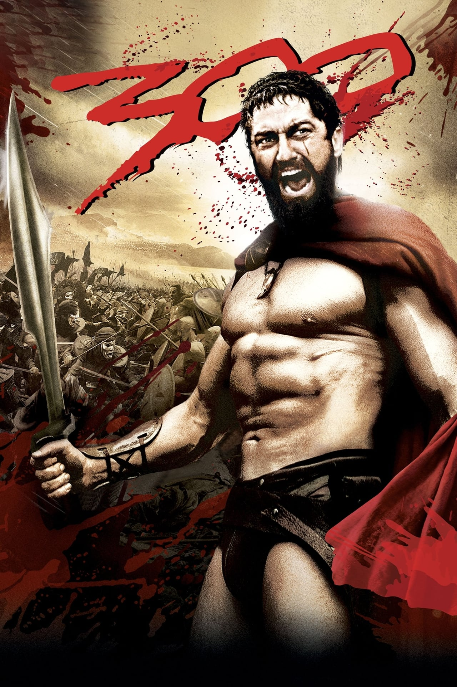

| Mis DVD Favoritos |
| Titulo |
Protagonista |
Imagen del Cartel |
Sinopsis |
| El señor de los anillos: La comunidad del anillo |
Frodo |
 |
En la Tierra Media, el Señor Oscuro Sauron forjó los Grandes Anillos del Poder y creó uno con el poder de esclavizar a toda la Tierra Media. Frodo Bolsón es un hobbit al que su tío Bilbo hace portador del poderoso Anillo Único con la misión de destruirlo. Acompañado de sus amigos, Frodo emprende un viaje hacia Mordor, el único lugar donde el anillo puede ser destruido. Sin embargo, Sauron ordena la persecución del grupo para recuperar el anillo y acabar con la Tierra Media. |
Mr.Nobody |
Nemo Nobody |
|
Cuando sus padres se separan siendo él un niño, Nemo debe decidir si quedarse con su padre o con su madre. A partir de esa elección se definirá su futuro: ¿Conocerá a Élise? ¿Elegirá casarse con Jeanne? ¿Tendrá la oportunidad de vivir junto a Anna? Mientras no elija, cualquiera de esas vidas son posibles y todas merecen ser vividas. |
| Cadena Perpetua |
Andy Dufresne |
|
Andrew Dufresne es un hombre inocente que es acusado del asesinato de su mujer. Tras ser condenado a cadena perpetua, es enviado a la cárcel de Shawshank, en Maine. Con el paso de los años, Andrew conseguirá ganarse la confianza del director del centro y el respeto de los otros convictos, especialmente de Red, el jefe de la mafia. |
| 300 |
Leonidas |
 |
Leonidas, rey de Esparta, y sus 300 guerreros luchan hasta la muerte contra el numeroso ejército persa de Xerxes en la Batalla de las Termópilas. |
|